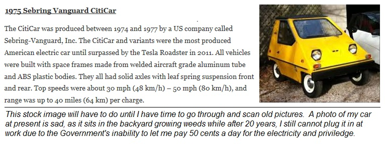

As a senior at Georgia Tech in 1970, I heard about the MIT/CAL Tech Clean Air Car Race and started building an Electric Car as a senior project. I was able to get an old WWII airplane starter motor from surplus and convinced a local car dealer to donate the chassis from a Volkswagon as shown below. I got it to the point of driving around the EE parking lot using a bunch of lead-acid batteries and a heavy duty step-contactor from an old manually driven elevator. By the time of graduation and my immediate comissioning from ROTC into the Navy the state of the car is shown below.
.
I had to report immediately for duty in California and so the car was turned over to my Professor and since Georgia Tech is on the quarter system, he was able to form a special class (EE-442) to finish the car for the race in August. I finally got to actually drive the finished car later during a brief visit in the fall at Homecoming.
This article below that chronicled the EE442 class project was written by Gretchen Larson, the wife of Dr. Ron Larson, our mentor. The article appeard in the 1970 Ga Tech Alumni magazine and is reproduced here for convenience.
I finally got back to EV's with the purchase of a City Car in 1980 shown below. after completion of my Navy career.

Bob Bruninga, WB4APR
APRS Engineering LLC